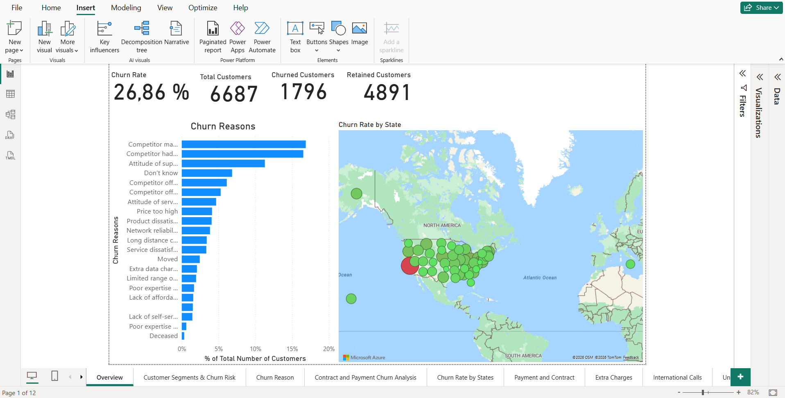
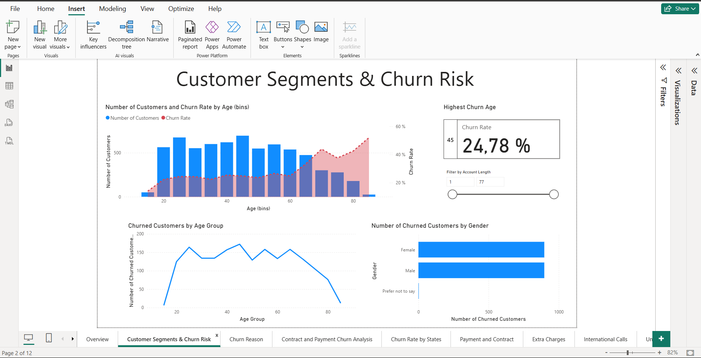
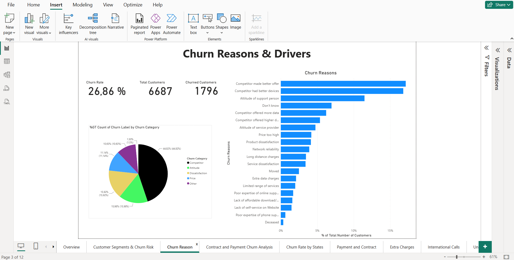
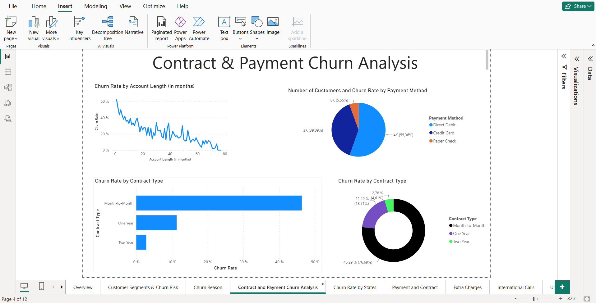

Course-Based Analytics Project
Customer Churn Dashboard
A Power BI analytics project using a DataCamp customer churn dataset to explore churn patterns, customer behaviour, contract types, billing trends, and retention-focused business insights.
Power BI
Customer Churn Analysis
Project overview
Turningcustomer datainto insight.
This project analyses customer churn using Power BI. The goal was to prepare and clean the dataset, create useful DAX measures, and design dashboard pages that help identify churn patterns, high-risk customer groups, and areas where retention efforts may be needed.
This was a course-based analytics project using a DataCamp-provided customer churn dataset. The focus was on data cleaning, dashboard design, DAX measures, and communicating business insights clearly through interactive visuals.
Churn is more than who left.
Customer churn becomes useful when it explains the patterns behind customer loss. The analysis needed to make it easier to compare churn across contract type, data usage, monthly charges, payment method, and customer behaviour.
Build a dashboard that explains churn risk.
The objective was to clean and model the data, create useful measures, and present dashboard pages that help users understand churn risk, compare customer segments, and identify areas where retention efforts may be needed.
Analysis process
From datato dashboard.
The project followed a clear analysis process: import the dataset, clean and transform it in Power Query, build the data model, create DAX measures, design focused dashboard pages, and communicate the key business insights.
Power Query
Cleaned and transformed the dataset by removing unnecessary rows and columns, fixing blank or missing values, removing duplicates, correcting inconsistent formatting, replacing incorrect values, and setting correct data types.
Relationships
Prepared the data model by organising the tables and relationships needed to support accurate filtering, segmentation, and dashboard analysis.
Measures
Created DAX measures to calculate key values used in the report, such as churn-related totals, customer counts, contract comparisons, and dashboard-level KPIs.
Focused Pages
Designed each dashboard page around one main analytical question to reduce cognitive load and make the report easier to scan, compare, and understand.
Business Insights
Used visuals, slicers, cards, and summaries to communicate what the data suggests about churn risk, customer behaviour, and retention opportunities.
Power BI
Power Query
DAX
Data Cleaning
Data Modelling
Churn Analysis
Dashboard pages
Each screenshot will sit beside the insight it supports.

Dashboard 01
Churn Overview
This overview page provides a high-level summary of customer churn performance. It highlights the overall churn rate, total number of customers, number of churned customers, common churn reasons, and churn distribution by state. The purpose of this page is to give users a quick understanding of the size of the churn problem.
Key insight: 26.86% of customers churned, with 1,796 churned customers out of 6,687 customers. Churn is visible through total volume, churn reasons, and geographic distribution, helping guide deeper analysis into where customer loss may be concentrated.
Dashboard 02
Customer Segments & Churn Risk
This dashboard page explores how churn risk appears across different customer segments, with a focus on age groups, gender, and account length. The main visual compares the number of customers in each age group with the churn rate, making it easier to see whether churn risk changes as customers get older.
The page also includes an account length filter, which allows the viewer to analyse churn patterns based on how long customers have been with the company. Gender is included to check whether churned customers are concentrated in a specific gender group, while the highest churn age card highlights the age group with the strongest churn count or churn risk.
Key insight: churn risk is more visible in certain age groups, especially where the churn rate increases even if the number of customers is lower. Gender appears more balanced in this view, meaning it may not be the strongest churn factor on its own. The highest churn age card helps draw attention to the customer age group that may need closer retention focus.
Dashboard 03
Churn Reasons & Retention Drivers
This dashboard page focuses on the reasons behind customer churn. It breaks churn down by detailed churn reasons and broader churn categories, helping users move beyond the overall churn rate and understand what may be driving customer loss.
The main churn reasons show whether customers are leaving because of competitor offers, device quality, support experience, price, service dissatisfaction, or other issues. A contract type filter allows the viewer to check whether churn reasons change across different customer contract groups.
Key insight: competitor-related reasons appear strongly among the top churn drivers, especially better offers and better devices. This suggests retention may need to focus on competitive pricing, value offers, device options, and service experience rather than only general churn reduction.
Dashboard 04
Contract, Payment & Account Length
This dashboard page analyses churn patterns by contract type, payment method, and account length. It helps show whether churn risk is linked to how long customers have been with the company, the type of contract they are on, and how they make payments.
The account length visual shows how churn changes over the customer lifecycle, while the contract and payment visuals help compare churn behaviour across different customer groups. This supports retention-focused decision-making by identifying which customer arrangements may need more attention.
Key insight: churn appears higher among customers with shorter account lengths, suggesting that early-stage customers may need stronger onboarding and retention support. Month-to-month contracts also appear important because flexible contract customers may be easier to lose.Recommendation: the business should focus on improving early customer experience, monitoring month-to-month customers closely, and offering retention incentives such as better support, loyalty offers, or contract upgrade benefits.
Designed to support retention thinking.
The dashboard focuses on explaining churn by contract behaviour, billing patterns, usage, and customer attributes. The purpose is not only to show churn numbers, but to help identify where a business could focus retention attention.
Analytics is also communication design.
This project strengthened my understanding of data cleaning, Power Query, DAX, dashboard layout, cognitive load, slicers, and turning raw data into a story that a business user can understand.
Making the dashboard clear, not crowded.
The main challenge was choosing visuals and measures that support the analysis without overloading the page. Each dashboard page should answer a specific question instead of trying to show every possible chart at once.
Add stronger storytelling with the final screenshots.
Once the dashboard screenshots are added, each page can be paired with a short explanation of what it shows, why it matters, and the key insight a viewer should take from it.
Next step